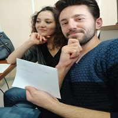
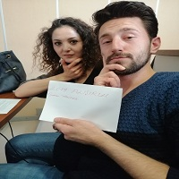
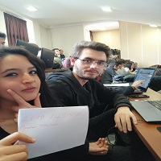
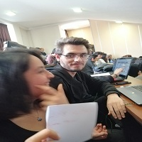

Descartes önce dört kural saptadı: Açık seçik ve belirgin fikirler dışında hiçbir şeyi kabul etmemek, her sorunu çözümü için gerekli sayıda parçalara ayırmak,düşünceleri basitten karmaşığa doğru sıralamak,gözden kaçmış bir şey olup olmadığını sürekli kontrol etmek.
|  |  |
Fransız filozof, matematikçi ve yazar. Hayatının çoğunu Hollanda’da geçirmiş olup, Modern Filozofinin Babası unvanını almıştır ve kendisini takip eden Batı felsefesi çoğunlukla onun günümüzde hala çalışılan yazılarına cevap niteliğindedir. . |
|
|  |  |